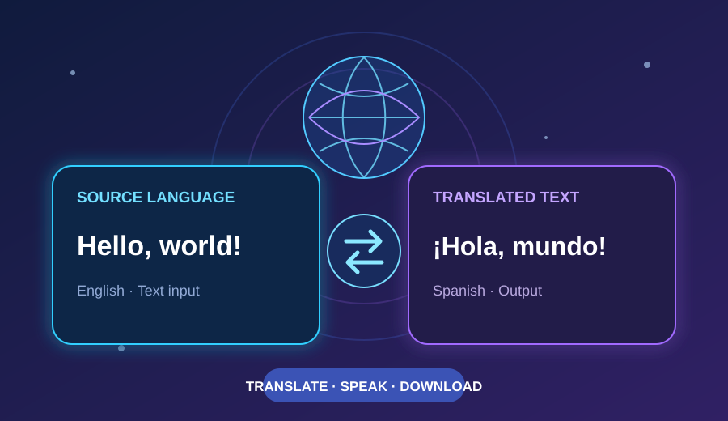
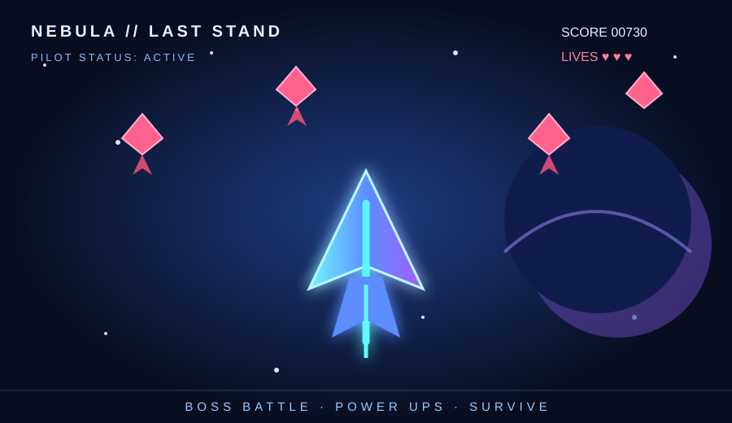

OPEN TO INTERNSHIPS & ENTRY-LEVEL OPPORTUNITIES
HELLO, I'M
Teja
Meragala.
I work with data|
Turning raw data into useful insights, building with Python, and exploring the possibilities of AI — one practical project at a time.
TEJA MERAGALA · DATA & AI
DATA / AI LABLIVE
T.
Curiosity → Code → Insight
PYTHONSQLAI / ML
⌘ Python
↗ Analytics
✳ AI / ML
01 / ABOUT
A curious mind.
A practical builder.
I'm a Computer Science and Engineering student specialising in Artificial Intelligence at Audisankara College of Engineering & Technology, expected to graduate in 2027.
My interests sit at the intersection of data analytics, Python development, and machine learning. I enjoy working through the full process — preparing data, exploring patterns, building useful tools, and presenting results clearly.
2027Expected graduation
7.68Current CGPA / 10
03Featured projects
02 / TOOLKIT
Tools I use to
make things happen.
A growing toolkit across programming, analytics, and intelligent applications.
Data analytics
Machine learning & NLP
Tools & platforms
03 / EXPERIENCE
Learning by
doing the work.
Internship and training experiences that helped me build practical foundations.
JUL 2026
Data Analytics Intern
InAmigos Foundation- Cleaned and transformed datasets using Python and Excel to prepare them for exploratory analysis.
- Reviewed operational metrics and created visual summaries to communicate data patterns and findings.
APR – JUN 2026
Data Analyst Intern
Evoastra Ventures Pvt. Ltd.- Analysed datasets to identify statistical trends and summarise findings for analytics leads.
- Used Pandas and NumPy for data-processing workflows and data-quality checks.
APR – JUN 2026
Software Programmer Intern
Council for Skills and Competencies (CSC India / APSCHE)- Completed Python-focused software development training covering programming fundamentals, algorithms, and data handling.
MAY – JUN 2026
AI & Machine Learning Trainee
Venura Tech- Practised machine-learning algorithms, data scaling, model evaluation, and Python-based model-development workflows.
04 / PROJECTS
Ideas turned into
working projects.
A selection of hands-on work across analytics, Python applications, and interactive development.
01 / ANALYTICS
End-to-End Supply Chain Demand Forecasting
Contributed to a supply-chain analytics and demand-forecasting workflow covering data preparation, exploratory analysis, feature engineering, model training, and prediction. Built as a team project.
Explore repository ↗
02 / PYTHON APP
Language Translation Tool
A Streamlit application that translates user-entered text across supported languages and generates downloadable speech audio using text-to-speech.
Hosted demo link is omitted for now because it may be unavailable. The repository has the source code.

03 / GAME + ANDROID
NEBULA: LAST STAND
A 2D browser space shooter featuring enemy waves, boss battles, power-ups, score tracking, and mobile controls — packaged as an Android app and tested on a physical device.
05 / CREDENTIALS
Milestones on
the learning path.
Training, programmes, and participation that reflect an ongoing commitment to learning.
 VIEW ORIGINAL ↗
VIEW ORIGINAL ↗NATIONAL AI HACKATHON · 2026
TenzorX National AI Hackathon 2026
Unstop · Organized by Poonawalla Fincorp
 VIEW ORIGINAL ↗
VIEW ORIGINAL ↗CERTIFICATE OF PARTICIPATION · 15 AUG 2026
Gemini Cup 2.0 X Fund My Crazy
Google Student Ambassador Program · GSA 2026
 VIEW ORIGINAL ↗
VIEW ORIGINAL ↗COMPLETION BADGE
Introduction to Generative AI
Google Cloud Skills Boost
 VIEW ORIGINAL ↗
VIEW ORIGINAL ↗FELLOWSHIP COMPLETION · 08 MAY 2026
ALTA AI Builders Fellowship
AI & LLM Fundamentals · Prompt Engineering · AI Tools & Projects · Agentic AI & RAG
 VIEW ORIGINAL ↗
VIEW ORIGINAL ↗INTERNSHIP COMPLETION · 27 JUN 2026
Software Programmer – Python
Council for Skills and Competencies (CSC India) · APSCHE
 VIEW ORIGINAL ↗
VIEW ORIGINAL ↗COURSE COMPLETION · 6 MAY 2026
Introduction to Artificial Intelligence
Simplilearn SkillUp
 VIEW ORIGINAL ↗
VIEW ORIGINAL ↗WORKSHOP · 2–6 NOV 2026
Python Full Stack with Gen AI
Full Stack Experts Academy · Innomatics Research Labs
 VIEW ORIGINAL ↗
VIEW ORIGINAL ↗ASSESSMENT CERTIFICATE · 16 NOV 2026
SkillQuest – Generative AI Literacy
Simplilearn SkillUp
Open any certificate or achievement image to view the supplied original screenshot. The Google Cloud Skills Boost item uses the LinkedIn completion-badge screenshot you shared.
06 / EDUCATION
CURRENTLY LEARNING
B.Tech in Computer Science
& Engineering — AI
Audisankara College of Engineering & Technology
AUG 2023 — JUL 2027 (EXPECTED)
7.68CGPA / 10
Class X · 96.67% (580 / 600)
Class XII · 78.7%
Class X · 96.67% (580 / 600)
07 / CONTACT
HAVE AN OPPORTUNITY OR AN IDEA?
Let's build
something useful.
I'm open to Data Analyst, Python, and AI/ML internship opportunities, collaborations, and conversations about technology.
Say hello ↗